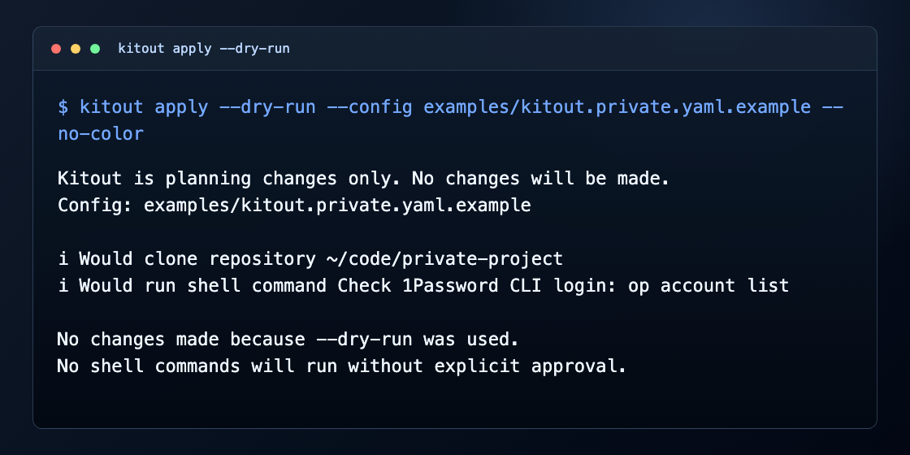
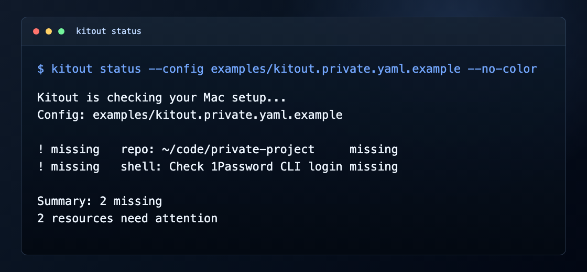
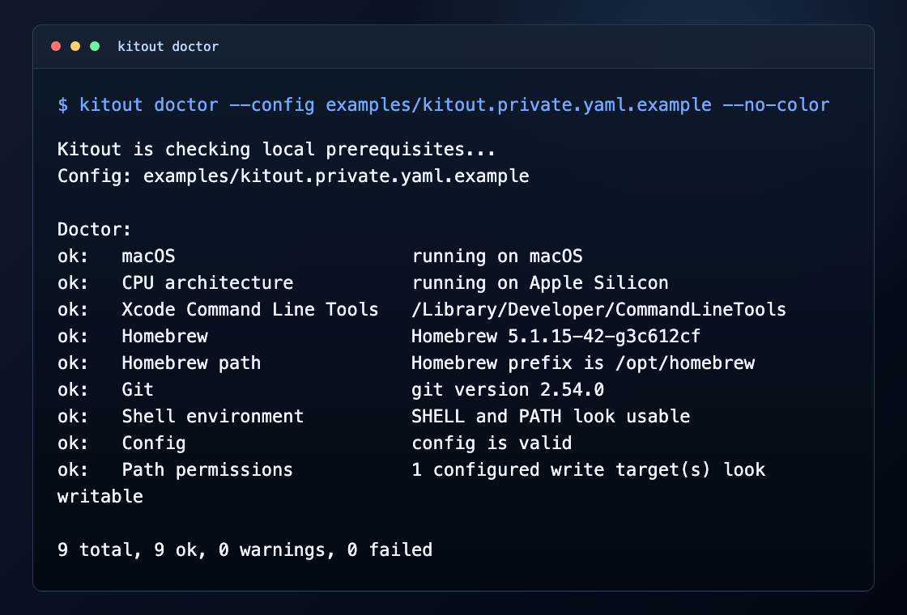

Mac setup as reviewed state
Your Mac. Defined.
Kitout checks packages, apps, repos, dotfiles, folders, and defaults against a YAML file before it changes anything.
brew install kitout

Workflow
Declare, inspect, preview, apply.
-
1
Define
Write the Mac state you expect in YAML, then keep it in version control.
-
2
Check
Run status to see what is satisfied, missing, changed, skipped, or failed.
-
3
Preview
Use dry-run to inspect the exact work Kitout would do without changing files.
-
4
Apply
Apply only the resources that need work, with explicit approval for risky actions.
Real output
Screenshots from the CLI, not mock text.


Safety model
Preview first. Apply after review.
Status never makes changes, dry-run never makes changes, and shell commands only run when they are listed in config and approved.
Install
Start with the same commands in the README.
Public release path
brew tap vwall/kitout
brew install kitoutBuild from source until the tap is published
go install ./cmd/kitout